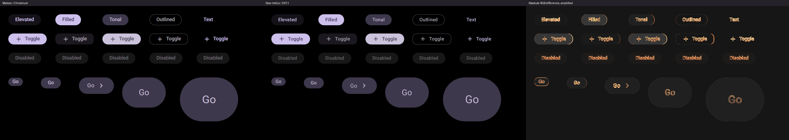
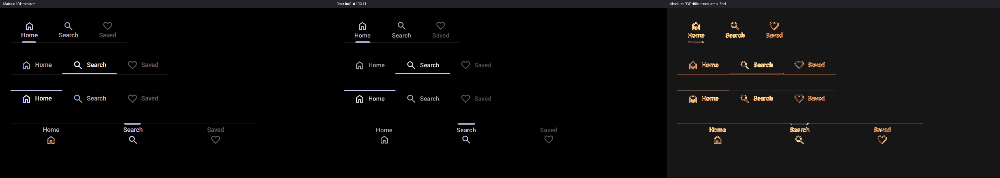
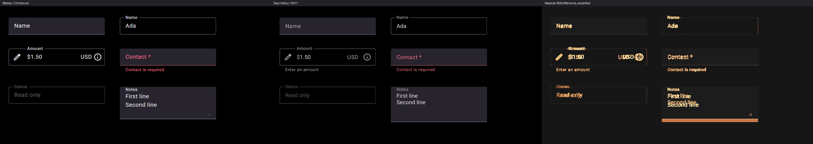
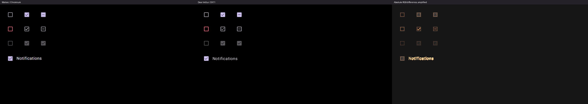
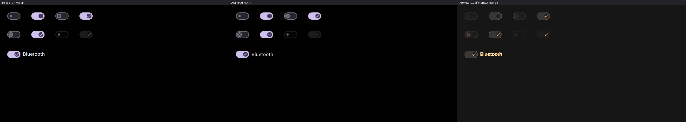
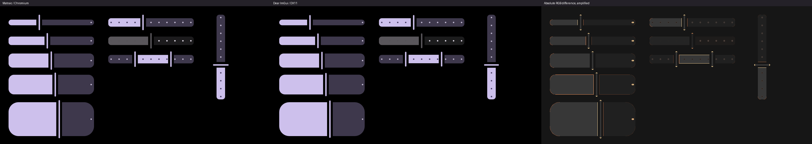
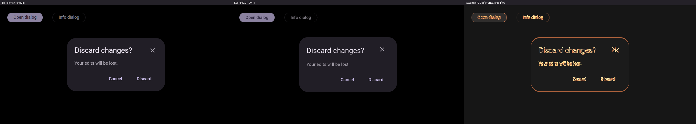

Open a comparison for full-resolution pixels. See the capture notes for remaining differences.
2.253% of pixels exceed a maximum RGB-channel delta of 12.

2.173% of pixels exceed a maximum RGB-channel delta of 12.

2.959% of pixels exceed a maximum RGB-channel delta of 12.

0.426% of pixels exceed a maximum RGB-channel delta of 12.

0.319% of pixels exceed a maximum RGB-channel delta of 12.

0.474% of pixels exceed a maximum RGB-channel delta of 12.

2.213% of pixels exceed a maximum RGB-channel delta of 12.
